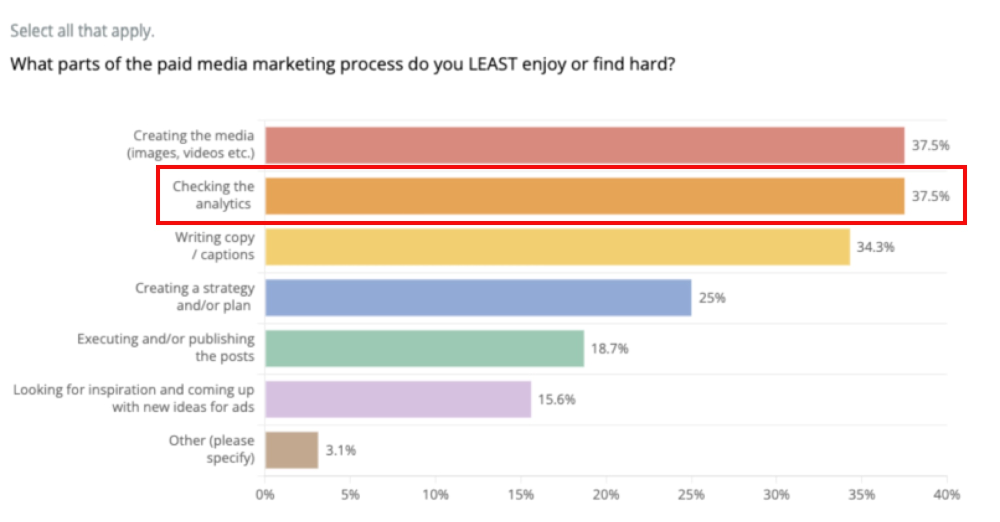
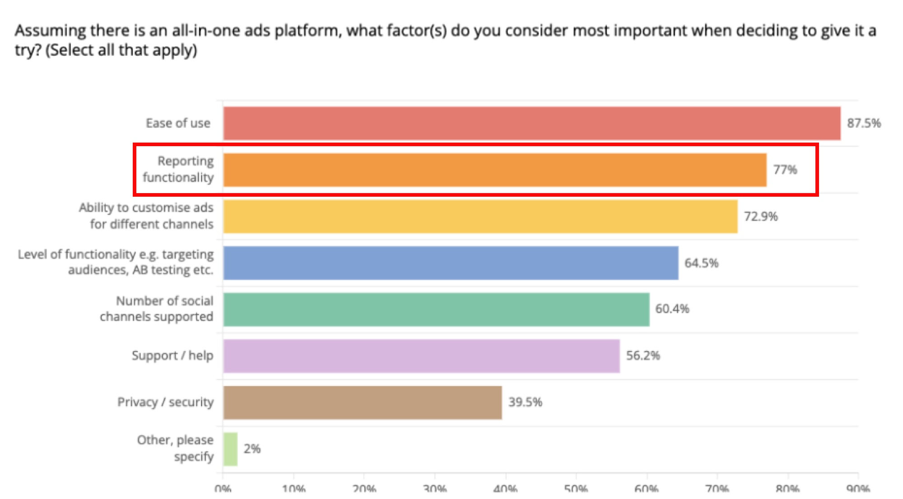
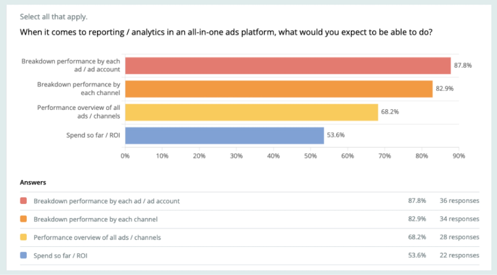
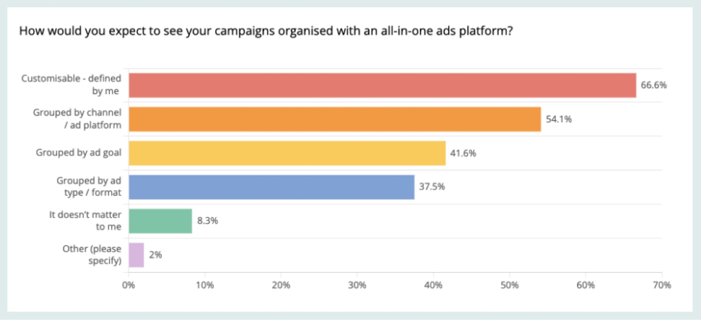
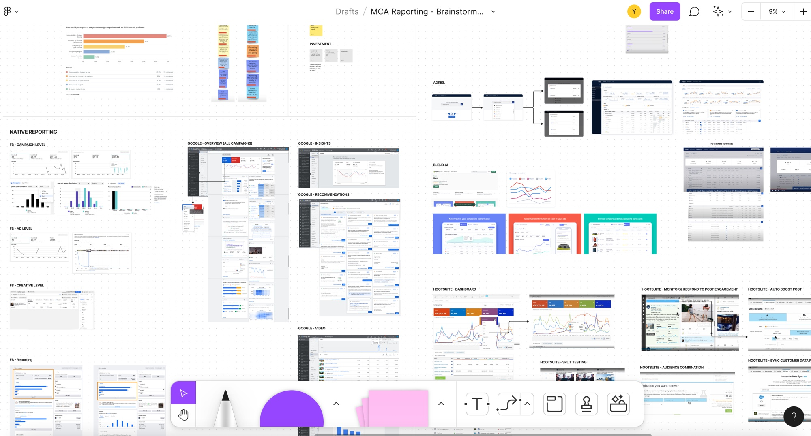
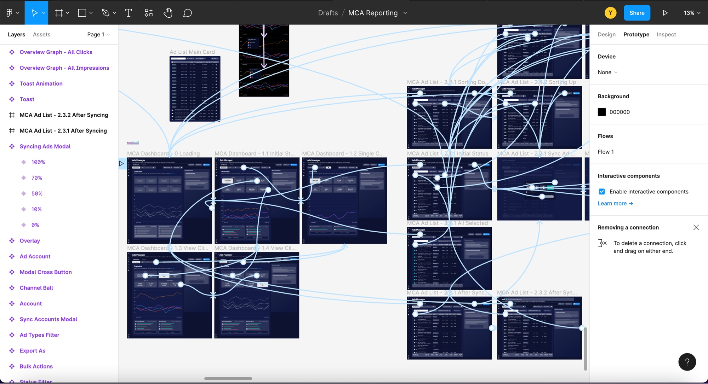
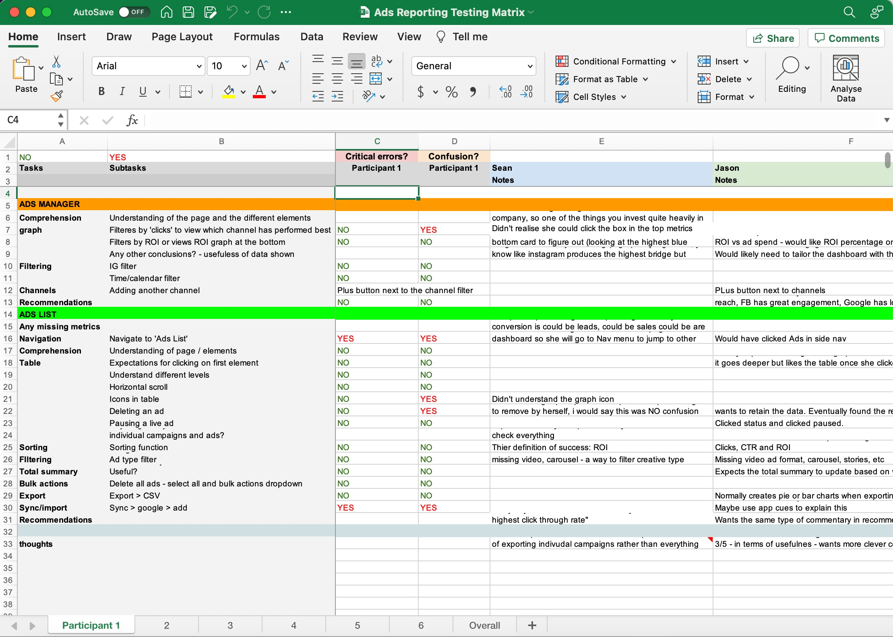
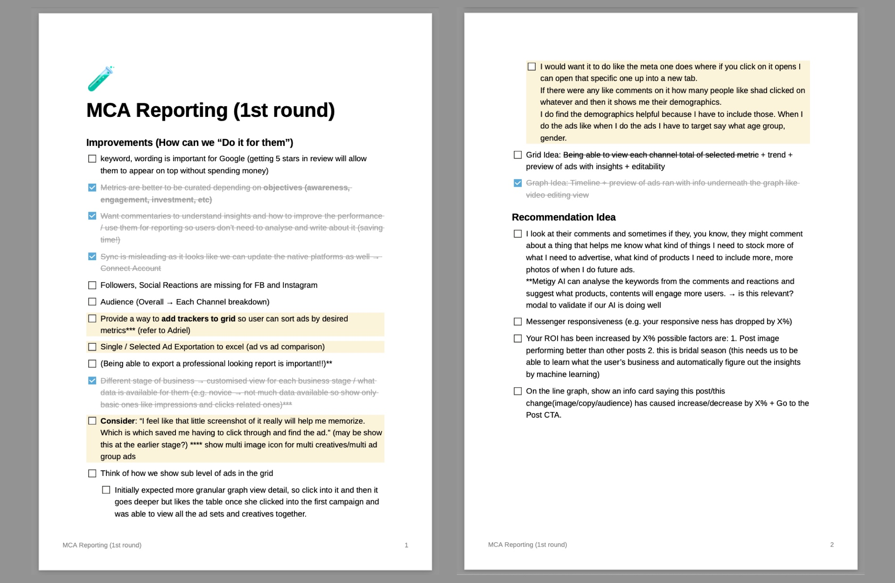
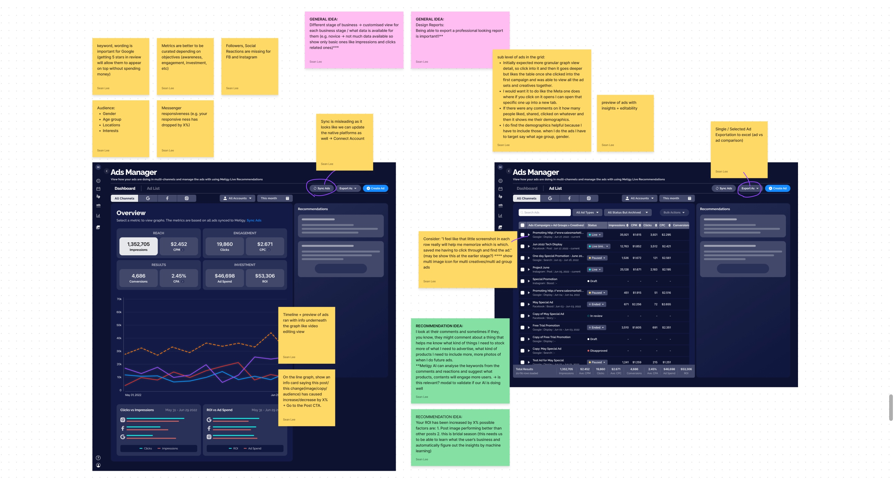

Metigy is an AI marketing platform and their plan was to consolidate multiple marketing channels such as Google, Facebook, Instagram, TikTok, etc so their users can manage multi-channel ads in one place. Metigy UX team ran quantitative survey with 75 potential users. 32 out of the 75 respondents were "advanced users" who were the main target as they are likely to use more than one advertising channel. From the survey, "Checking analytics" turned out to be one of the least enjoyed part of the paid media marketing process.  Also, reporting functionality was voted as the most important feature for all-in-one ads platform. Based on these insights, the team has decided to build multi-channel ads reporting as a first phase of the project. 
From the quantitative survey, I could figure out what needs to be on the dashboard for users to analyse their ads from multi-channels. We have left out customisability in this phase and focus on getting static metrics right.
 I have gathered all relevant user insights and reporting parts from native platforms and competitors. This enabled me to understand how other platforms display insights and handle importing ads. Design ideas started flowing into me so I visualised them in lo-fi prototypes first.
I have shared lo-fi designs early with the Ad squad as well as data team. This has speeded up the process of developing the ideas and checking feasibility on the go. At the end of the 8th iteration, we came to consensus on the structure that we want to test with our users.
Agreed Structure:
I have decided to use a hi-fi prototype for testing. Because "Ease of Use" was the most important factor for all-in-one platform, validating usability and discoverability of components is crucial for the feature to be successful.
I have collaborated with PM and Researcher to decide research questions and how we should ask them without leading users. We have recruited 6 users who are using more than one social medial channel for paid-ads (4 advanced / 2 novice users). For the first half of the interview, we have asked them how they are currently running their ads and their reporting process. For the rest half, we tested the prototype.
The results were very insightful and clearly gave us the direction to make the feature more attractive for our users.
Positive Feedback:
To Be Improved:
I noted down the ideas to be applied to iterations and placed them on the tested prototype to make sure the insights are tackled at the right places.
 In the new design, the main line graph was validated that it is more used for reading trends and users prefer metric cards as it is quicker. So I have added the line graphs in each card for users to view trend for each metric without clicking cards to switch the graph.
AI Engineered Features
Dashboard For Users With No Trackers
Dashboard For Users With Trackers
Comparison Mode

I think the AI-ness of the product can be vastly enhanced by introducing voice command. Users can quickly speak keywords to get AI engineered insights. It could be very appealing to the users as to time saving.
Metigy went into administration without any notice, and the project had to end at this stage. Even the moment I am writing this now, I feel very passionate about the product and the project. This could grow so much bigger and impact our users enormously. It's a shame to see it has to ends this way. The last image is a userflow diagram I created for multi-channel ads, and it was what the wonderful team was going to achieve ultimately. RIP Metigy...